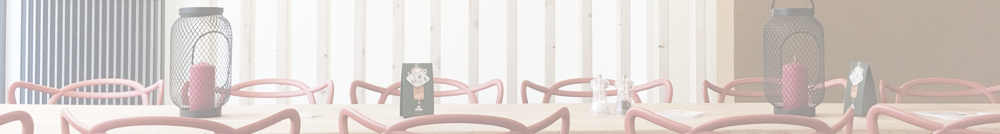

CONTACT
TARTIN’EMOI
RUE DU VERTBOIS 9 4000 LIEGE
INFO@TARTINEMOI.BE
0495825848

100% LOCAL, 100% SAVOIR FAIRE BELGE, 100% DELICIEUX

TARTIN’EMOI
RUE DU VERTBOIS 9 4000 LIEGE
INFO@TARTINEMOI.BE
0495825848